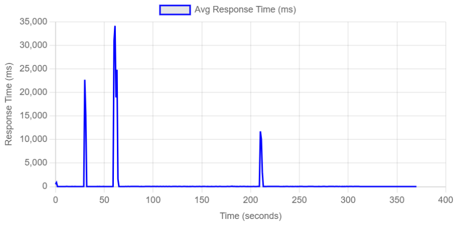
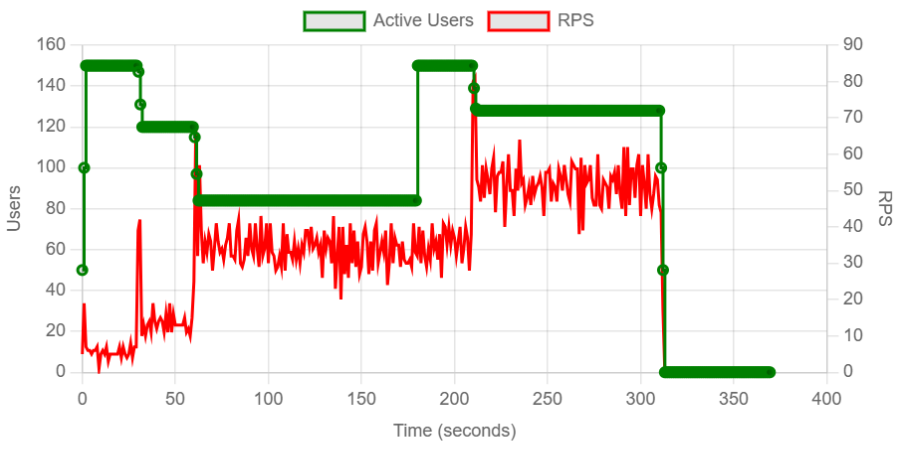
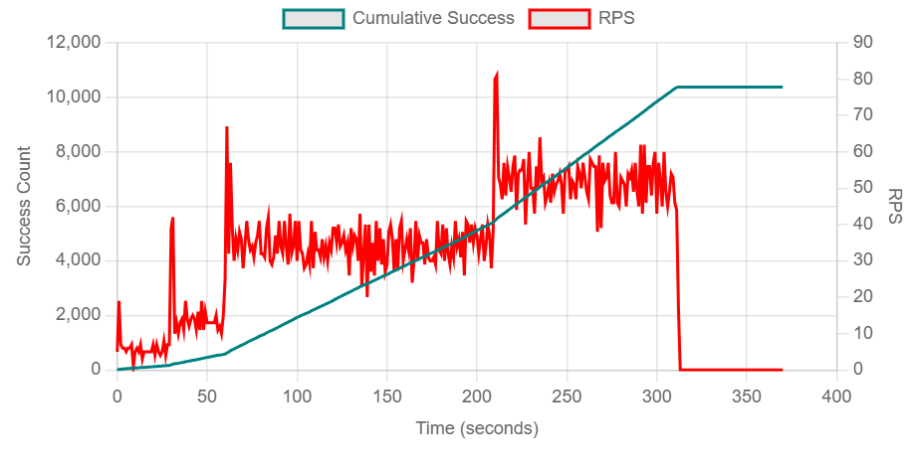
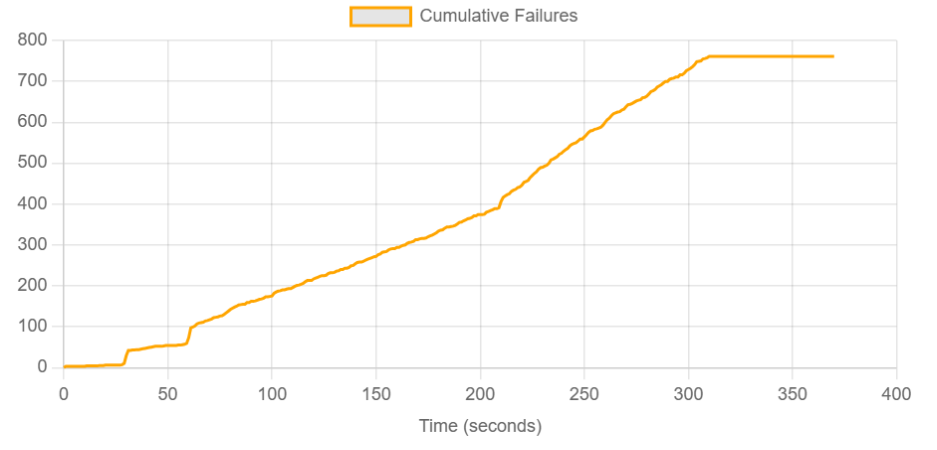

En este reporte documentamos la ejecución de una Prueba Spike. A diferencia de las pruebas de carga convencionales o de Ramp-up gradual, una prueba Spike somete al sistema a un incremento de tráfico extremo y casi instantáneo, seguido de una bajada igual de drástica.
El objetivo es simular escenarios de "avalancha", para evaluar si la arquitectura de PredictHealth colapsa o sobrevive a la presión repentina.
Las pruebas se ejecutaron desde una máquina local que actuaba como nodo maestro de Locust, generando tráfico HTTP hacia los servicios desplegados. Los componentes del sistema (CMS y microservicios) estaban corriendo localmente a través de Docker Compose.
Las URLs base configuradas para cada servicio bajo prueba fueron las siguientes:
http://localhost:80http://localhost:5000http://localhost:5001http://localhost:5002http://localhost:5003Utilizamos un patrón de carga personalizado llamado "DoubleWaveShape". Este escenario no es lineal; está diseñado para golpear al sistema con dos oleadas consecutivas de alta intensidad.
Archivo shape_spike_test.py
El script implementa una clase DoubleWaveShape que calcula matemáticamente (usando funciones seno) el número de usuarios para crear las olas de tráfico.
# shape_spike_test.py
from locust import HttpUser, task, between, LoadTestShape
import math
class DoubleWaveShape(LoadTestShape):
"""
Simula un pico doble.
Configuración:
- Base: 20 usuarios
- Pico: 200 usuarios
- Duración total: 240 segundos (4 min)
"""
time_limit = 240
min_users = 20
peak_one_users = 200
peak_two_users = 200
def tick(self):
# Lógica matemática para generar la curva de doble ola
run_time = self.get_run_time()
if run_time > self.time_limit:
return None
# ... cálculo de users y spawn_rate ...
return (round(user_count), round(spawn_rate))
La prueba tuvo una duración de 4 minutos. El sistema fue sometido a un estrés de 10x su carga normal en cuestión de segundos.
| Métrica | Valor |
|---|---|
| Total Peticiones | 11,143 |
| Total Fallos | 68 |
| Tasa de Error | 1.7% |
| RPS Promedio | 20.1 |
| Tiempo Respuesta (p95) - Global | 70 ms |
| Endpoint | Peticiones | Fallos | Tasa de Error | p95 Latencia |
|---|---|---|---|---|
| /auth/login | 220 | 68 | 30.9% | 1900 ms |
| /api/v1/doctors | 1050 | 0 | 0.0% | 16 ms |
| /api/v1/patients | 1080 | 0 | 0.0% | 15 ms |




/auth/login falló el 31% de las veces durante el pico. Esto se debe a un fenómeno conocido como "Thundering Herd" (Estampida). Cuando 200 usuarios intentan hashear contraseñas y firmar tokens JWT en el mismo segundo, la CPU del contenedor de Auth se satura, provocando Timeouts (latencias > 1900ms).
La arquitectura es elástica y robusta para usuarios ya autenticados. Sin embargo, el proceso de entrada (Login) es frágil ante picos repentinos. Si 200 personas intentan entrar al mismo tiempo, 60 de ellas recibirán un error.
auth-service (mínimo 3 réplicas) para distribuir la carga de CPU del hashing de contraseñas.